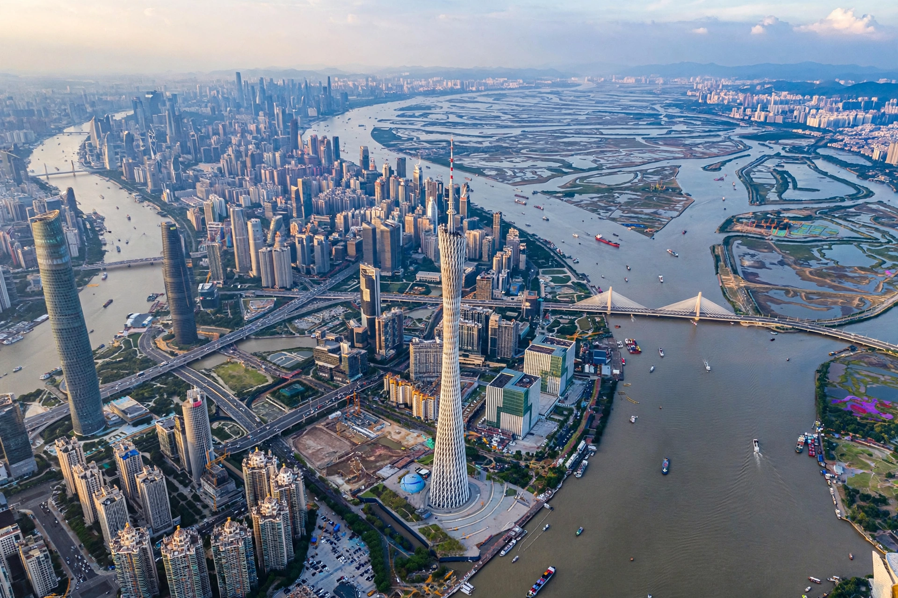

Pearl River Delta
| Pearl River Delta | |
| Country | China |
|---|---|
| Province | Guangdong |
| Major cities | Guangzhou, Shenzhen, Hong Kong, Macau, Dongguan, Foshan, Zhuhai |
| Population | Over 80 million (metro region) |

The Pearl River Delta (PRD) is the low-lying estuarine region around the Pearl River (Zhujiang) in Guangdong, southern China, where the river system meets the South China Sea. It is one of the most densely urbanised and economically dynamic regions on Earth, encompassing Guangzhou, Shenzhen, Hong Kong, Macau and a cluster of manufacturing cities.
Development
Designated special economic zones at Shenzhen (1980) and Zhuhai drew Hong Kong and foreign investment, turning the delta into the "factory of the world" for electronics, textiles and toys. Since the 2010s policy has pushed higher-value technology and services; the Greater Bay Area initiative integrates the delta's eleven cities, linked by the Hong Kong–Zhuhai–Macau Bridge (opened 2018), the world's longest sea crossing.
Geography
The delta is formed by sediments of the Pearl, West, North and East rivers. Its subtropical climate, typhoon exposure and very low elevation make it highly vulnerable to flooding and sea-level rise.
See also: Guangdong, Greater Bay Area.